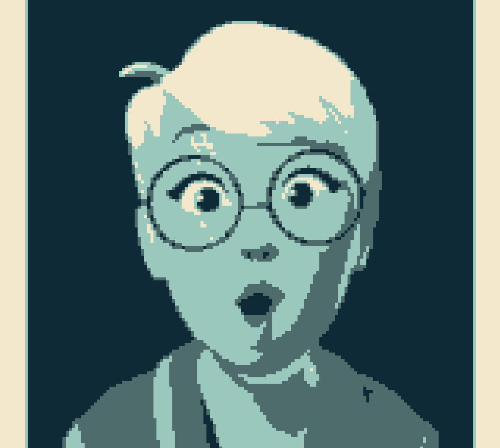
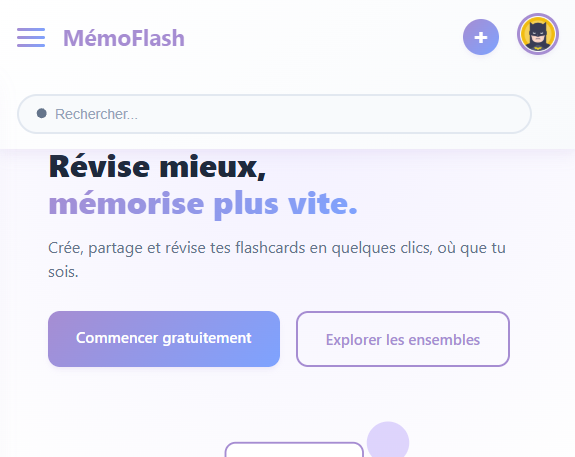
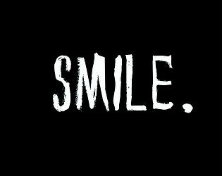
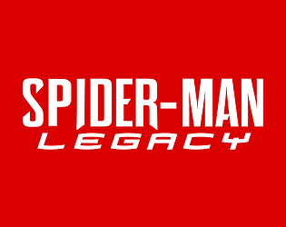

Projet principal · Unreal Engine 5
Spiderman Legacy
Fangame (non officiel) que j'ai lancé et que je dirige depuis environ deux ans, avec une équipe de créateurs. Game design, level design, sound design.
Portfolio · Recherche de stage en studio
Game Developer · Game Designer
Je conçois des expériences interactives, du game design au développement.
Fangame (non officiel) que j'ai lancé et que je dirige depuis environ deux ans, avec une équipe de créateurs. Game design, level design, sound design.

Trois jeux publiés sur itch.io, avec des versions physiques (non commerciales).

Les projets que vous pouvez essayer directement.

Jeu de combat fortement inspiré de Street Fighter II, à une exception près : les personnages...

Jeu dans lequel vous affrontez vos professeurs dans des combats épiques (ou presque)!

Jeu d'horreur dans lequel vous entrez dans l’esprit brisé du Batman qui rit (entrainement au sound design).

Fangame non officiel, sans affiliation avec Marvel ni Sony. Jeu dans lequel le fils de Spiderman prend la relève de Peter.
Les outils pratiqués dans mes projets, et ceux que j'explore encore.
PratiquéExploré
Passionné par le développement de jeux vidéo, j'ai entamé mon parcours en tant que développeur autodidacte en 2023. J'ai passé trois années à expérimenter, à coder des prototypes et à partager mes avancées sous forme de devlogs sur YouTube.
En lançant et en dirigeant Spiderman Legacy, j'ai découvert les réalités d'un projet collectif qui évolue dans le temps. Mes autres projets m'ont permis d'explorer différentes technologies, de la création de jeux rétro au développement web.
Je souhaite aujourd'hui découvrir le fonctionnement d'un studio professionnel, apprendre auprès d'équipes expérimentées et continuer à progresser dans le développement de jeux vidéo.